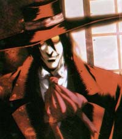
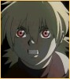
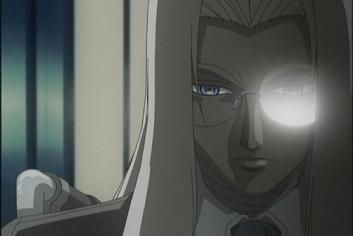
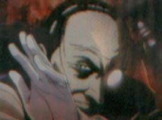
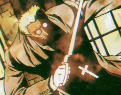
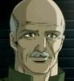

|  | Alucard: the Hellsing Organization's personal vampire. Although not much is know about this super killing machine, there are a few things that give us insight to his past. Alucard is considered to be one of the Original Undead, but is presumed to have been in his current form for around 500-700 years. To reach his current state, and be safe around humans, many experiments were done to him by the Hellsing family. Alucard helped fend off the Nazis in WWII with Walter, the "Angel of Death". After that, it is a dark period, in which Alucard was locked up in a dungeon, with blood to give him strength, only to know that his master would one day come for him. 20 years later when his master came, Integra, and he tasted her blood, he was revived from his prison. After saving Integra's life, she would become his master after proving to him that she was the one he had been waiting for. |
|  | Seras' problems all started when she was with the police unit D-11. They were called in to research a mad priest in Cheddar village, who ended up turning all of the unit into ghouls. Seras was the only one to survive, and eventually made her way to the priest, but can't find the will to kill him. Just as she is about to be taken under by the priest, Alucard saves the day, and busts things up. However, they only way that he can kill the priest and save Seras is to shoot through Seras, killing the vampire. Instead of letting her die, Alucard sucks her blood, turning her into a vampire. Once Seras is transferred to the Hellsing Organization, she begins to go out on missions, and realizes what she must do to stay alive. |
|  | Sir Integra Wingates Hellsing, Lord of the Hellsing Organization, London's own Anti-Freak unit. Integra is a woman of strong determination and will, and she commands her forces with force and justice. The Hellsing family has been protecting The Queen and The Church of England for centuries, and Integra takes this duty very seriously. She was given the title to run Hellsing by her father, who ran it before her. As a child, Integra grew up in the Hellsing mansion, unaware of most of the things her father was doing. She would take lessons from he father about vampires, why they were different from normal humans, why they were evil, and how to kill them. When her father died when she was just a young girl, the role of Hellsing CEO was passed on to her, instead of her jealous uncle. Her uncle, wanted control of Hellsing, sought to kill her, so that he could be in charge. However, Integra had other plans. Her father had always told her than in the lost dungeons below the mansion was something that would protect her if trouble ever arose. When Integra's uncle tried to wipe her out, she instinctively went to dungeon, unaware of what she would find. What she found was Alucard, and upon tasting Integra's blood, was revived and saved Integra from her uncle. Stirred by Integra's lack of fear, he knew that this little girl had to be the one he would call "master". |
|  | Walter Dollneaz, the Hellsing family retainer. Walter is your basic butler type, with a little twist, he can kick your ass! For his retainer/butler duties, Walter is a loyal servant of Integra, and does what she wishes. He is also her sworn protector, and would never let anything happen to her. Aside from protecting Integra, Walter is probably the only person that she would accept advice from. His main goal is to see that Integra is safe and happy. However, just try and pick a fight with Walter, and you'll be sorry. Although Walter is an older gentlemen, you'd never notice from the way he moves in battle. He was given the nickname "Angel of Death" by Alucard in WWII, when they fought against the Nazis to stop a plan to release vampires on the world. Many would agree that Walter, although a human, was the best agent Hellsing had during WWII, even over Alucard. Walter fights with very thin, high velocity metal wire, or dental floss, which he uses to sever body parts or move around. Walter also has lightning quick reflexes, and can dodge bullets with ease. Besides having one of the most unusual weapons around, he also make weapons for the Hellsing operatives. He custom built Alucard's .454 Casull and 13 mm Jackal, and Seras' Halconnen cannon. Walter is also a computer freak, and can hack into any system around. Walter also enjoys surfing the internet. |
|  | Alexander Andersong, the fanatic freak-killing priest! Kind of sounds like an oxymoron, but, that's what Andersong was sent to London to do. Alexander is an eccentric priest with blessed knives, and spreads religious propaganda throughout the land. He's also got a sweet Scottish accent, and kills vampires for God. After the death of Enrico Stivelleti, a fellow catholic from Italy, Andersong was sent to London to investigate. However, Andersong took a little more leeway and decided to take down some extra vampires. Andersong works for Iscariot, a secret section of the Vatican's Section 13 freak killing group. So, obviously, Alexander kills vampires to purify the world for Jesus! Well, it's not far from it, he sees his goal as a God assigned journey to eliminate all vampires. So, when he gets to London, and finds Alucard, he has to kill him. After Alucard steals Alexander's "frag", the two square off. After a go at Alexander trying to stab Alucard, Alucard shoots him in the forehead. However, to Alucard's surprise, Andersong is a human regenerator! Andersong stands up, head smoldering, laughing about how God gave him power to fight vampires. Their fight is interrupted as Integra stops them, and sends Andersong back to Italy. |
|  | He is the head of the Hellsing army. As the person in charge for all the troops, he is always present on the ground to supervise the military operations. His status also enables him to rather often converse with Integra. Lastly, he is responsible (with Walter) for the military training of Victoria as well as her integration in the team. |